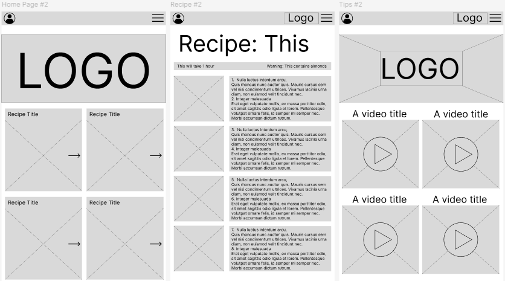
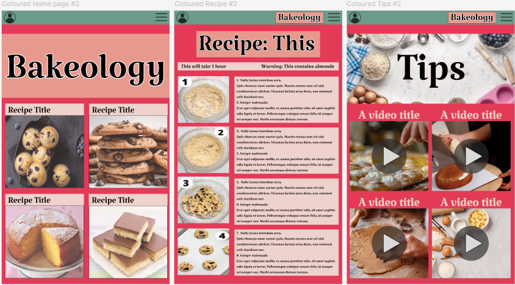
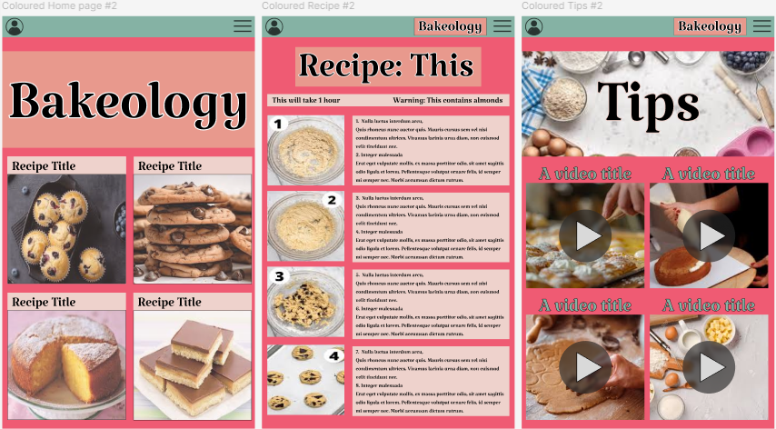

Learning Figma
Home
Python
Figma
Website
Introduction:
This year I have used Figma to learn how to design and refine a webpage to make it more suitable for the end user. I developed a Cookbook website called Bakeology. I developed the website initially in the Wireframe, through the addition of colour, to a refined finished product of colour pleasing to my users.
The Wireframe:

I drew a rough sketch of where the buttons, images and other symbols would be placed on my webpage and created it digitally.
Addition of colour:

Once I had selected my chosen Wireframe, I trialled some colour combinations to see which would be best suited to the end user.
Refined Product:

Using the feedback I received from prospective end users, I refined the colour palette of my webpages to perfection.